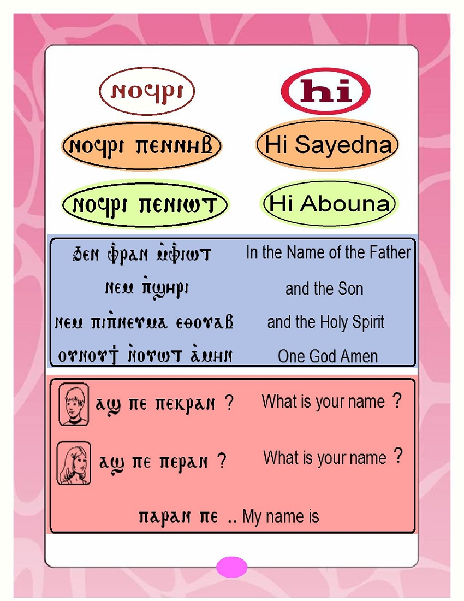

His Holiness Pope Tawadros II
118 Pope of Alexandria and
th
Patriarch of the See of Saint Mark
Page
St Mark's Festival Anthem- Hold fast what you have
2
Hold fast what you have
3
Hold Fast to Your Faith- At the Sea of Tiberias
4
Hold Fast to Your Holy Bible - King Josiah
7
Hold Fast to Your Spirituality - Daniel
9
Hold Fast to Your Church's Rites - Altar vessels
11
Memorization
14
Coptic
15
Hymns & Rituals
18
1
St. Mark's Festival 2015 Anthem
Hold fast what you have,
That no one may take your crown,
Hold fast what you have
What you have hold fast
Grains of Wheat we sure are planted
Here on earth we live and die,
Deep in heart are always chanted,
God's own promises we live by
Grains of Wheat we're humbly waiting
For God's rain to bless our land
We bring fruits as we were told,
Thirty, sixty 'n' a hundred fold
Hold fast what you have,
That no one may take your crown,
Hold fast what you have
What you have hold fast
Grains of Wheat the days are counted,
Here on earth we live and die,
Enemy is growling out your doors,
Give no slumber to your eyes
Narrow is the gate, broken is the road,
Where we're marching carrying a load,
Upwards far above the skies,
Keep your treasure and your heart
Hold fast what you have,
That no one may take your crown,
Hold fast what you have
What you have hold fast
2
What does hold fast mean?
Hold fast means to be tightly attached to something.
The Holy Bible reminds us to "hold fast" many times.
What should we hold fast to?
When a fisherman is fishing on his boat he throws an anchor so his boat
will hold fast to the sand at the bottom of the sea. We as children of
our Lord Jesus Christ look to heaven and throw our anchor.
This anchor is to tightly attach ourselves to our Lord Jesus Christ.
This anchor is our faith, the Holy Bible, the Church, the Sacraments,
our prayers, God's love and love to others.
When we hold fast to our Lord Jesus Christ we will receive our crown in
Heaven that our Lord Jesus Christ promised us!
"Behold, I am coming quickly!
Hold fast what you have,
that no one may take your crown. "
Revelation 3:11
3

The Miracle of catching fish at
the Sea of Tiberias
John 21:1-14
For the parents: This topic teaches us about our faith and dogma, and how to hold fast to
them. We can do this by focusing on the titles of the Lord Jesus Christ -
(Immortal - Almighty - The Good Shepherd)
Have you ever chosen not to do something because you thought it was too hard?
This story will help you to remember that God is with us, to always have a steadfast
faith (that means strong faith) and to remember that nothing is too hard for
our Lord Jesus Christ.
After our Lord Jesus Christ died on the cross and resurrected, St. Peter, one
of the disciples decided to go back to his old job as a fisherman. St. Peter went
with 6 other disciples into a boat to catch fish, but they did not catch anything all
night, not even one fish. They were sad, they didn't know what to do. When
morning came, they saw the Lord Jesus Christ standing at the shore. How can this
be? Although, our Lord Jesus Christ was crucified, died and rose from the dead
after 3 days He was standing right in front of
them. How
could this
be? Because our Lord Jesus
Christ is
the
Immortal God (that means He lives forever)
4
When our Lord Jesus Christ asked the disciples if they have any food,
they said no. Our Lord Jesus Christ told them to throw their net on the right
side of the boat, and they will find some. The disciples obeyed Him and threw
their net; they caught so many fish that they were not even able to carry the
net. Although they fished all night and caught nothing, one word from the
Lord Jesus Christ made them catch many fish because
He is the Almighty God (that means God can do anything)
The disciples dragged their net filled with fish to the shore.
When they arrived, our Lord Jesus Christ had a surprise for
them; He had fish and bread for them ready to eat.
Our Lord Jesus Christ said to them "Come and eat breakfast".
God knew the disciples were tired and hungry after working all
night. He knows what everyone needs because He is the
Good Shepherd (that means God takes care of everyone).
"Casting all your care upon Him, for He cares for you." 1 Peter 5:7
This story shows us that the Lord Jesus Christ is
Immortal, Almighty, and the Good Shepherd .
This is why we always trust Him and are never afraid.
5
WHO IS OUR LORD JESUS CHRIST?
Color the picture and fill in the missing words
Our Lord Jesus Christ LIVES FOREVER , He is the __________________ God.
Our Lord Jesus Christ CAN DO ANYTHING , He is the _______________ God.
Our Lord Jesus Christ TAKES CARE OF EVERYONE ,
He is the ____________ _________________.
6

My Holy Book is valuable and precious
King Josiah holds fast to the Word of God
2 Kings 22
Our Holy Bible is the most precious and valuable book we have,
it teaches us how to behave and conduct ourselves in a
The tian way. cle of catching fish at Chris
Mira
This stor the o Sea of boy
who became king and was able y
is ab ut a
Tiberias
young
to get his people to remember the Word of God and to behave
John 21:1-14
by following it.
Josiah became king when he was 8 years old.
He knew about God's commandments and obeyed them
from a very young age.
When Josiah grew up, he saw that his people were worshiping statues
instead of God. They forgot about God's book and His words.
They didn't even teach God's word to their kids.
They were doing so many wrong things! Since King
Josiah knew God's teaching from a young age,
he wanted to teach his people the right way.
He ordered his soldiers to break all the
statues that the people
worshiped so they would come
back and worship God.

7
Josiah made sure the soldiers
did exactly as he ordered them,
and he began to rebuild the
House of God that was torn
down by the kings before him.
While they were rebuilding,
Hilkiah the priest found the
Book of Law that was lost a long
time ago.
This book had God's
teachings. Hilkiah was so happy
and returned it to King Josiah.
King Josiah gathered everyone in God's house and read
to them from the Book of Law. He told them "we have to
listen to God's teachings and obey them".
When the people heard God's Words in the Book of Law,
everyone stopped doing the wrong things they were doing
and they also promised not to worship statues again.
The people followed God's Words in the Book of Law
and obeyed it.
The word of God gives joy to those who
hear and obey it.
" The Statutes of the Lord are right,
rejoicing the heart." Psalm 19:8
We need to read
The Holy e Bible is t our of recious book
the Holy Bible
tha gh teaches " Th Statu es p the Lord are ri t t,
us the rej o oicin f the heart. e Psalm to obey it.
w rd o g God and w " need 19:8

every day.
Daniel loves and prays to God
(Daniel 6)
Daniel was one of God's people, and he worked as
a governor for King Darius. Daniel loved God so
much and he prayed and kneeled to God 3 times D
every day.
Daniel was a successful man and the king loved
him because he was the best of all his governors.
The king wanted to give Daniel a higher position than
other governors. They were jealous of Daniel and
tried to find something that Daniel did wrong but they
couldn't.
They had an idea to get Daniel in trouble. They told the king to give an
order that no one is allowed to pray to God for 30 days, and anyone who
wants something can only ask the king not God, and whoever doesn't listen
to this order will be put in the lions' den. They knew that Daniel would never
stop praying to God because he loves Him so much.
9
The king gave this order, but this didn't stop Daniel
from praying to God. Daniel did what he did every
day; he went to his room, knelt down and prayed to
God. He knows God is hearing his prayers.
" You will make your prayer to Him,
He will hear you." Job 22:27
The other governors saw Daniel " The in Statutes of
l the k ing d that
e L
righ was
not
pray g and to
d
th
or are he t,
obeying the order and was praying
to rejoicin g
. The
e he ked
" Psalm g 19:8 ut Daniel
his God th
y as art. the
kin to p
in the lions' den. This made the king sad because he loved Daniel, but he had to put
him with the lions because he cannot change his word about the order.
God saved Daniel and sent His
angel and shut the mouths of the
lions because He loves him.
God loves all His children who
love Him, He cares for them
and keeps them. This is why
we must hold fast to God's
love and always talk to Him.
10
The order and use of things used in the Holy Liturgy
To the parent: this topic teaches the child about orderliness and organization by
learning about the order and use of altar vessels during the liturgy.
It is very important to be organized and do everything
in order so we can be successful. The church is a great
example of order; our Lord Jesus Christ Himself put this
order of the church.
Everything that is on the altar has a special job.
T HE P ATEN (the plate):
The Paten is the first thing
Abouna puts on the altar. The Paten is round and holds the
holy bread that becomes the Body of Our Lord Jesus after the
prayers. The Paten is like the manger where our Lord Jesus
Christ was sleeping as a baby.
T HE D OME : it covers the paten, just like the star that was on
top of the manger when Baby Jesus was born.
T HE C HALICE (the cup): at the beginning of the liturgy,
Abouna fills it with wine (grape juice) which becomes the Blood
of our Lord Jesus after the prayers.
T HE S POON : The spoon is used by Abouna at the end of
the liturgy to serve the Holy Blood to the congregation
(people in church).
11
T HE T HRONE : The throne holds the chalice during the
liturgy. It is placed behind the paten and each side of the
throne has an icon, of our Lord Jesus Christ, St. Mary, and
saints.
T HE I NCENSE B OX : The incense box is placed on the right
side of the paten. Abouna takes incense from the incense
box to put in the censer.
T HE G OSPEL : A silver box that has a copy of the
4 Gospels inside of it.
Everything in the Church is organized
and has a specific use.
This teaches us that when we are organized
and do everything in order, we will be
successful. Just like the verse says:
"Let all things be done decently
and in order."
1 Corinthians 14:40
" The Statutes of the Lord are right,
When we hold fast and remember all g we e learned; P our faith,
rejoicin th heart." salm 19:8
our Bible, our love to God, and be organized and successful,
God will reward us and give us a Crown in heaven.

12
Match the word to the correct picture
Incense Box
The Throne
The Gospel
Paten and Dome
Chalice and Spoon
13
1.
Psalm 133
From the 3 rd Watch of the Midnight Prayer
Behold, bless the Lord,
O you the servants of the Lord,
who stand in the house of the Lord,
in the courts of the house of our God.
In the nights lift up your hands
O you saints, and bless the Lord.
The Lord shall bless you out of Zion,
He who made heaven and earth.
Alleluia
2.
14
Our Lord spent about 4 years in Egypt as a baby.
He spoke to the people in Egypt in their language,
which was the Coptic language at that time.
THE COPTIC ALPHABET
15
16

17
18